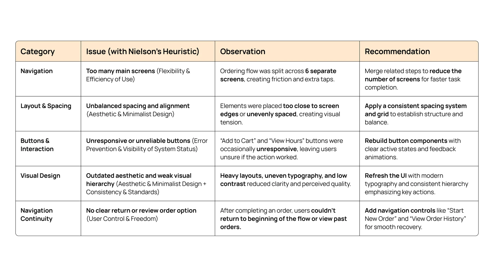
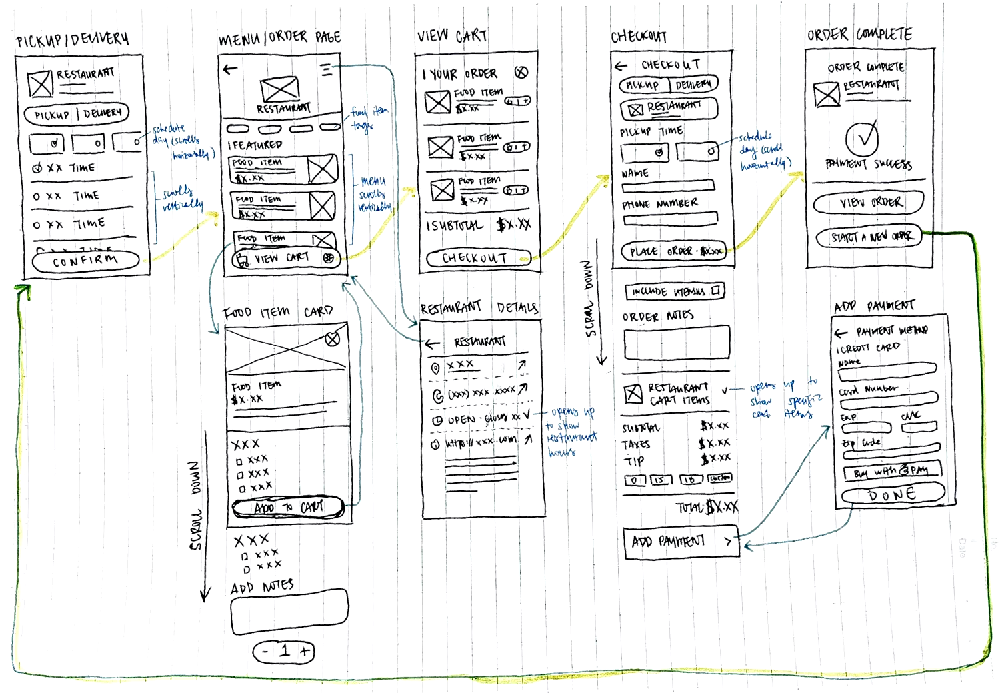
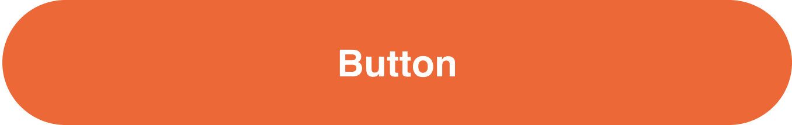
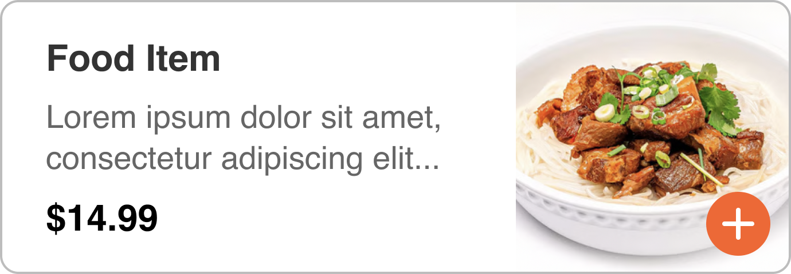
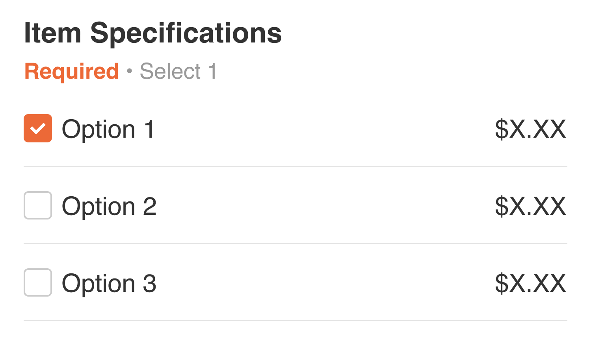
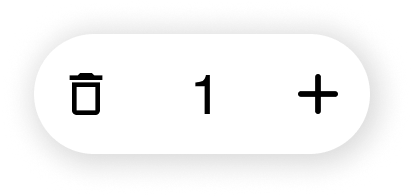

Yammii: Restaurant Online Order Revamp
An independent redesign of Yammii's mobile order flow that simplified checkout from 6 to 5 steps, modernized the UI, and added navigation logic.
Yammii's order flow worked, but clunky steps and a dated UI got in the way.
Yammii is a cloud-based restaurant technology platform offering POS, QR-code ordering, and management tools for food and beverage businesses. Their existing mobile ordering flow worked functionally but read as dense, unintuitive, and visually inconsistent, surfacing four core issues.
The redesign came down to three core changes:
Streamlined Flow
Reduced order steps from 6 to 5 for faster checkout, without removing any real decisions.
Navigation Fluidity
Added "View Order" and "Start a New Order" after completion. Fixed unresponsive buttons throughout.
Modernized UI System
Updated icons, layout, and component hierarchy for cleaner readability and on-brand consistency.


Research & Heuristics
Yammii is an early-stage startup with limited resources for live user testing, so I ran a heuristic evaluation of the existing mobile flow against Nielsen's 10 Heuristics. I paired it with competitive benchmarking against DoorDash and Uber Eats to ground the findings in conventions customers already know.


Ideation & Wireframes
I started by mapping the user flow (old vs new) so the changes were visible at the journey level, not just per screen. Then I sketched low-fidelity wireframes, drawing out how the new UI could look while focusing on the improvements I wanted to make.


Hi-Fi Design
I built reusable components, established consistent spacing and typography scales, and iterated on the high-fidelity wireframes in Figma. The visual system stayed close to Yammii's existing brand so returning users wouldn't feel disoriented, while the underlying flow simplifications did the work of making the experience feel new.
Color
Components
Primary button

Toggle
Food item card

Item specification

Quantity

Filter
Before & After
Designing thoughtfully inside real-world constraints.
Working on a live product taught me to design more systematically. Without direct user feedback, I leaned on heuristics, competitive analysis, and structured reasoning, and got sharper at building in Figma.
With no access to real users, I had to be deliberate about documenting decisions and tradeoffs. Working within an existing product also meant constantly weighing what to change against what to keep familiar.
I'd extend the redesign to desktop, add lightweight usability testing to validate the flow, and refine edge cases like accessibility, motion, and microinteractions.
Strong UX isn't about perfect conditions, it's about thoughtful, evidence-based decisions within real constraints. This redesign gives Yammii a clear direction to scale from.
Other Projects
Phia x Design Meetup: Designathon Finalist
Designed for Phia, an AI-powered fashion shopping app, as a designathon finalist.
Hemi: A Personal Reflection Journal
Designing and building a digital journal in Claude Code, from a paper planner sketch to a fully deployed web app.
AI Assistant for Google Maps
An AI assistant for place discovery in Google Maps to help reduce decision fatigue.